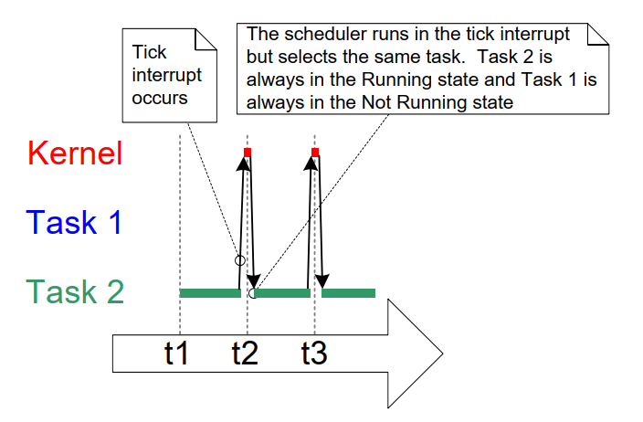

4 Task Management
4.1 Introduction
4.1.1 Scope
This chapter covers:
- How FreeRTOS allocates processing time to each task in an application.
- How FreeRTOS chooses which task should execute at any given time.
- How the relative priority of each task affects system behavior.
- The states that a task can exist in.
This chapter also discusses:
- How to implement tasks.
- How to create one or more instances of a task.
- How to use the task parameter.
- How to change the priority of a task that has already been created.
- How to delete a task.
- How to implement periodic processing using a task. (A later chapter describes how to do the same using software timers.)
- When the idle task will execute and how it can be used.
The concepts presented in this chapter are fundamental to understanding how to use FreeRTOS and how FreeRTOS applications behave. Therefore, this is the most detailed chapter in the book.
4.2 Task Functions
Tasks are implemented as C functions. Tasks must implement the expected function prototype shown in Listing 4.1. which takes a void pointer parameter and returns void.
void vATaskFunction( void * pvParameters );
Listing 4.1 The task function prototype
Each task is a small program in its own right. It has an entry point, will normally run forever in an infinite loop, and does not exit. Listing 4.2 shows the structure of a typical task.
A FreeRTOS task must not be allowed to return from the function that implements it in any way. It must not contain a 'return' statement and must not be allowed to execute past the end of its implementing function. If a task is no longer required, it should be explicitly deleted as demonstrated in Listing 4.2.
A single task function definition can be used to create any number of tasks where each created task is a separate execution instance. Each instance has its own stack and thus its own copy of any automatic (stack) variables defined within the task itself.
void vATaskFunction( void * pvParameters )
{
/*
* Stack-allocated variables can be declared normally when inside a function.
* Each instance of a task created using this example function will have its
* own separate instance of lStackVariable allocated on the task's stack.
*/
long lStackVariable = 0;
/*
* In contrast to stack allocated variables, variables declared with the `static`
* keyword are allocated to a specific location in memory by the linker.
* This means that all tasks calling vATaskFunction will share the same
* instance of lStaticVariable.
*/
static long lStaticVariable = 0;
for( ;; )
{
/* The code to implement the task functionality will go here. */
}
/*
* If the task implementation ever exits the above loop, then the task
* must be deleted before reaching the end of its implementing function.
* When NULL is passed as a parameter to the vTaskDelete() API function,
* this indicates that the task to be deleted is the calling (this) task.
*/
vTaskDelete( NULL );
}
Listing 4.2 The structure of a typical task function
4.3 Top Level Task States
An application may consist of many tasks. If the processor running the application includes a single core, then only one task may be executing at any given time. This implies that a task may exist in one of two states: Running and Not Running. This simplistic model is considered first. Later in this chapter we describe the several sub-states of the Not Running state.
A task is in the Running state when the processor is executing that task's code. When a task is in the Not Running state, the task is paused and its state has been saved so that it may resume execution the next time the scheduler decides it should enter the Running state. When a task resumes execution, it does so from the instruction it was about to execute before it left the Running state.

Figure 4.1 Top level task states and transitions
A task transitioned from the Not Running state to the Running state is said to have been "switched in" or "swapped in". Conversely, a task transitioned from the Running state to the Not Running state is said to have been "switched out" or "swapped out". The FreeRTOS scheduler is the only entity that can switch a task in and out of the Running state.
4.4 Task Creation
Six API functions may be used to create tasks:
xTaskCreate(),
xTaskCreateStatic(),
xTaskCreateRestricted(),
xTaskCreateRestrictedStatic(),
xTaskCreateAffinitySet(), and
xTaskCreateStaticAffinitySet()
Each task requires two blocks of RAM: one to hold its Task Control Block (TCB) and one to store its stack. FreeRTOS API functions with "Static" in their names use pre-allocated blocks of RAM passed into the functions as parameters. Conversely, API functions without "Static" in their names allocate the required RAM dynamically at runtime from the system heap.
Some FreeRTOS ports support tasks running in a "restricted" or "unprivileged" mode. FreeRTOS API functions with "Restricted" in their names create tasks that execute with limited access to the system's memory. API functions without "Restricted" in their names create tasks that execute in "privileged mode" and have access to the system's entire memory map.
FreeRTOS ports that support Symmetric Multi Processing (SMP) allow different tasks to run simultaneously on multiple cores of the same CPU. For these ports, you may specify which core a task will run on by using functions with "Affinity" in the name.
The FreeRTOS task creation API functions are quite complex. Most examples in this
document use xTaskCreate() because it is the simplest of these functions.
4.4.1 The xTaskCreate() API Function
Listing 4.3 shows the xTaskCreate() API function prototype.
xTaskCreateStatic() has two additional parameters that point to the
memory pre-allocated to hold the task's data structure and stack,
respectively. Section 2.5: Data Types and Coding Style Guide
describes the data types and naming conventions used.
BaseType_t xTaskCreate( TaskFunction_t pvTaskCode,
const char * const pcName,
configSTACK_DEPTH_TYPE usStackDepth,
void * pvParameters,
UBaseType_t uxPriority,
TaskHandle_t * pxCreatedTask );
Listing 4.3 The xTaskCreate() API function prototype
xTaskCreate() Parameters and return value:
-
pvTaskCodeTasks are simply C functions that never exit and, as such, are normally implemented as an infinite loop. The
pvTaskCodeparameter is simply a pointer to the function that implements the task (in effect, just the function's name). -
pcNameA descriptive name for the task. FreeRTOS does not use this in any way and it is included purely as a debugging aid. Identifying a task by a human-readable name is much simpler than identifying it by its handle.
The application-defined constant
configMAX_TASK_NAME_LENdefines the maximum length a task name can be, including the NULL terminator. Supplying a longer string results in the string being truncated. -
usStackDepthSpecifies the size of the stack to allocate for use by the task. Use
xTaskCreateStatic()instead ofxTaskCreate()to use pre-allocated memory instead of dynamically allocated memory.Note the value specifies the number of words the stack can hold, not the number of bytes. For example, if the stack is 32-bits wide and
usStackDepthis 128, thenxTaskCreate()allocates 512 bytes of stack space (128 * 4 bytes).configSTACK_DEPTH_TYPEis a macro that allows the application writer to specify the data type used to hold stack sizes.configSTACK_DEPTH_TYPEdefaults touint16_tif left undefined, so #defineconfigSTACK_DEPTH_TYPEtounsigned longorsize_tinFreeRTOSConfig.hif the stack depth multiplied by the stack width is greater than 65535 (the largest possible 16-bit number).Section 13.3 Stack Overflow, describes a practical method of choosing an optimal stack size.
-
pvParametersFunctions that implement tasks accept a single void pointer (
void *) parameter.pvParametersis the value passed into the task using that parameter. -
uxPriorityDefines the task's priority. 0 is the lowest priority and
(configMAX_PRIORITIES – 1)is the highest priority. Section 4.5 describes the user definedconfigMAX_PRIORITIESconstant.If a
uxPrioritygreater than(configMAX_PRIORITIES – 1)is defined, it will be capped to(configMAX_PRIORITIES – 1). -
pxCreatedTaskPointer to a location to store a handle to the created task. This handle may be used in future API calls to, for example, change the task's priority or delete the task.
pxCreatedTaskis an optional parameter and may be set to NULL if the task's handle is not required. -
Return values
There are two possible return values:
-
pdPASSThis indicates the task was created successfully.
-
pdFAILThis indicates there was not enough heap memory available to create the task. Chapter 3 provides more information on heap memory management.
-
Example 4.1 Creating tasks
The following example demonstrates the steps needed to create two simple tasks
and then start the newly created tasks. The tasks simply print out a string
periodically by using a crude busy loop to create the period delay. Both
tasks are created at the same priority and are identical except for the
string they print out—see Listing 4.4 and Listing 4.5 for their respective
implementations. See chapter 8 for warnings about using printf() in
tasks.
void vTask1( void * pvParameters )
{
/* ulCount is declared volatile to ensure it is not optimized out. */
volatile unsigned long ulCount;
for( ;; )
{
/* Print out the name of the current task task. */
vPrintLine( "Task 1 is running" );
/* Delay for a period. */
for( ulCount = 0; ulCount < mainDELAY_LOOP_COUNT; ulCount++ )
{
/*
* This loop is just a very crude delay implementation. There is
* nothing to do in here. Later examples will replace this crude
* loop with a proper delay/sleep function.
*/
}
}
}
Listing 4.4 Implementation of the first task used in Example 4.1
void vTask2( void * pvParameters )
{
/* ulCount is declared volatile to ensure it is not optimized out. */
volatile unsigned long ulCount;
/* As per most tasks, this task is implemented in an infinite loop. */
for( ;; )
{
/* Print out the name of this task. */
vPrintLine( "Task 2 is running" );
/* Delay for a period. */
for( ulCount = 0; ulCount < mainDELAY_LOOP_COUNT; ulCount++ )
{
/*
* This loop is just a very crude delay implementation. There is
* nothing to do in here. Later examples will replace this crude
* loop with a proper delay/sleep function.
*/
}
}
}
Listing 4.5 Implementation of the second task used in Example 4.1
The main() function creates the tasks before starting the scheduler—see Listing 4.6 for its implementation.
int main( void )
{
/*
* Variables declared here may no longer exist after starting the FreeRTOS
* scheduler. Do not attempt to access variables declared on the stack used
* by main() from tasks.
*/
/*
* Create one of the two tasks. Note that a real application should check
* the return value of the xTaskCreate() call to ensure the task was
* created successfully.
*/
xTaskCreate( vTask1, /* Pointer to the function that implements the task.*/
"Task 1",/* Text name for the task. */
1000, /* Stack depth in words. */
NULL, /* This example does not use the task parameter. */
1, /* This task will run at priority 1. */
NULL ); /* This example does not use the task handle. */
/* Create the other task in exactly the same way and at the same priority.*/
xTaskCreate( vTask2, "Task 2", 1000, NULL, 1, NULL );
/* Start the scheduler so the tasks start executing. */
vTaskStartScheduler();
/*
* If all is well main() will not reach here because the scheduler will now
* be running the created tasks. If main() does reach here then there was
* not enough heap memory to create either the idle or timer tasks
* (described later in this book). Chapter 3 provides more information on
* heap memory management.
*/
for( ;; );
}
Listing 4.6 Starting the Example 4.1 tasks
Executing the example produces the output shown in Figure 4.2.
C:\Temp>rtosdemo
Task 1 is running
Task 2 is running
Task 1 is running
Task 2 is running
Task 1 is running
Task 2 is running
Task 1 is running
Task 2 is running
Task 1 is running
Task 2 is running
Task 1 is running
Task 2 is running
Task 1 is running
Task 2 is running
Figure 4.2 The output produced when executing Example 4.11
The screen shot shows each task printing out its message exactly once before the next task executes. This is an artificial scenario that results from using the FreeRTOS Windows simulator. The Windows simulator is not truly real time. Also, writing to the Windows console takes a relatively long time and results in a chain of Windows system calls. Executing the same code on a genuine embedded target with a fast and non-blocking print function may result in each task printing its string many times before being switched out to allow the other task to run.
Figure 4.2 shows the two tasks appearing to execute simultaneously; however, both tasks execute on the same processor core, so that cannot be the case. In reality, both tasks are rapidly entering and exiting the Running state. Both tasks are running at the same priority and so share time on the same processor core. Figure 4.3 shows their actual execution pattern.
The arrow along the bottom of Figure 4.3 shows time passing from time t1 onwards. The colored lines show which task is executing at each point in time—for example, Task 1 is executing between times t1 and t2.
Only one task can exist in the Running state at any one time. So, as one task enters the Running state (the task is switched in), the other enters the Not Running state (the task is switched out).

Figure 4.3 The actual execution pattern of the two Example 4.1 tasks
Example 4.1 created both tasks from within main(), prior to starting the
scheduler. It is also possible to create a task from within another
task. For example, Task 2 could have been created from within Task 1, as
shown by Listing 4.7.
void vTask1( void * pvParameters )
{
const char *pcTaskName = "Task 1 is running\r\n";
volatile unsigned long ul; /* volatile to ensure ul is not optimized away. */
/*
* If this task code is executing then the scheduler must already have
* been started. Create the other task before entering the infinite loop.
*/
xTaskCreate( vTask2, "Task 2", 1000, NULL, 1, NULL );
for( ;; )
{
/* Print out the name of this task. */
vPrintLine( pcTaskName );
/* Delay for a period. */
for( ul = 0; ul < mainDELAY_LOOP_COUNT; ul++ )
{
/*
* This loop is just a very crude delay implementation. There is
* nothing to do in here. Later examples will replace this crude
* loop with a proper delay/sleep function.
*/
}
}
}
Listing 4.7 Creating a task from within another task after the scheduler has started
Example 4.2 Using the task parameter
The two tasks created in Example 4.1 are almost identical, the only difference between them is the text string they print out. If you create two instances of a single task implementation, and use the task parameter to pass the string into each instance, this would remove the duplication.
Example 4.2 replaces the two task functions used in Example 4.1 with a
single task function called vTaskFunction(), as shown in Listing 4.8.
Note how the task parameter is cast to a char * to obtain the string
the task should print out.
void vTaskFunction( void * pvParameters )
{
char *pcTaskName;
volatile unsigned long ul; /* volatile to ensure ul is not optimized away. */
/*
* The string to print out is passed in via the parameter. Cast this to a
* character pointer.
*/
pcTaskName = ( char * ) pvParameters;
/* As per most tasks, this task is implemented in an infinite loop. */
for( ;; )
{
/* Print out the name of this task. */
vPrintLine( pcTaskName );
/* Delay for a period. */
for( ul = 0; ul < mainDELAY_LOOP_COUNT; ul++ )
{
/*
* This loop is just a very crude delay implementation. There is
* nothing to do in here. Later exercises will replace this crude
* loop with a proper delay/sleep function.
*/
}
}
}
Listing 4.8 The single task function used to create two tasks in Example 4.2
Listing 4.9 creates two instances of the task implemented by
vTaskFunction(), using the task's parameter to pass a different string
into each. Both tasks execute independently under the control of the
FreeRTOS scheduler and with their own stack, and so with their own copies of
the pcTaskName and ul variables.
/*
* Define the strings that will be passed in as the task parameters. These are
* defined const and not on the stack used by main() to ensure they remain
* valid when the tasks are executing.
*/
static const char * pcTextForTask1 = "Task 1 is running";
static const char * pcTextForTask2 = "Task 2 is running";
int main( void )
{
/*
* Variables declared here may no longer exist after starting the FreeRTOS
* scheduler. Do not attempt to access variables declared on the stack used
* by main() from tasks.
*/
/* Create one of the two tasks. */
xTaskCreate( vTaskFunction, /* Pointer to the function that
implements the task. */
"Task 1", /* Text name for the task. This is to
facilitate debugging only. */
1000, /* Stack depth - small microcontrollers
will use much less stack than this.*/
( void * ) pcTextForTask1, /* Pass the text to be printed into
the task using the task parameter. */
1, /* This task will run at priority 1. */
NULL ); /* The task handle is not used in
this example. */
/*
* Create the other task in exactly the same way. Note this time that
* multiple tasks are being created from the SAME task implementation
* (vTaskFunction). Only the value passed in the parameter is different.
* Two instances of the same task definition are being created.
*/
xTaskCreate( vTaskFunction,
"Task 2",
1000,
( void * ) pcTextForTask2,
1,
NULL );
/* Start the scheduler so the tasks start executing. */
vTaskStartScheduler();
/*
* If all is well main() will not reach here because the scheduler will
* now be running the created tasks. If main() does reach here then there
* was not enough heap memory to create either the idle or timer tasks
* (described later in this book). Chapter 3 provides more information on
* heap memory management.
*/
for( ;; )
{
}
}
Listing 4.9 The main() function for Example 2
The output from Example 4.2 is exactly as per that shown for example 1 in Figure 4.2.
4.5 Task Priorities
The FreeRTOS scheduler always ensures the highest priority task that can run is the task selected to enter the Running state. Tasks of equal priority are transitioned into and out of the Running state in turn.
The uxPriority parameter of the API function used to create the task
gives the task its initial priority. The vTaskPrioritySet() API function
changes a task's priority after its creation.
The application-defined configMAX_PRIORITIES compile-time configuration
constant sets the number of available priorities. Low numeric priority
values denote low-priority tasks, with priority 0 being the lowest
priority possible—so valid priorities range from 0 to
(configMAX_PRIORITIES – 1). Any number of tasks can share the same
priority.
The FreeRTOS scheduler has two implementations of the algorithm used to
select the Running state task and the maximum allowable value for
configMAX_PRIORITIES depends on the implementation used:
4.5.1 Generic Scheduler
The generic scheduler is written in C and can be used with all FreeRTOS
architecture ports. It does not impose an upper limit on configMAX_PRIORITEIS.
In general, it is advisable to minimize configMAX_PRIORITIES because more
values require more RAM and will result in a longer worst-case execution time.
4.5.2 Architecture-Optimized Scheduler
Architecture optimized implementations are written in architecture-specific
assembly code and are more performant than the generic c implementation, and the
worst-case execution time is the same for all configMAX_PRIORITIES values.
The architecture optimized implementation imposes a maximum value for
configMAX_PRIORITIES of 32 on 32-bit architectures and 64 on 64-bit
architectures. As with the generic method, it is advisable to keep
configMAX_PRIORITIES at the lowest value practical because higher
values require more RAM.
Set configUSE_PORT_optimized_TASK_SELECTION to 1 in FreeRTOSConfig.h to
use the architecture optimized implementation, or 0 to use the generic
implementation. Not all FreeRTOS ports have an architecture optimized
implementation. Those that do default
configUSE_PORT_optimized_TASK_SELECTION to 1 if it is left undefined.
Those that do not, default configUSE_PORT_optimized_TASK_SELECTION to 0
if it is left undefined.
4.6 Time Measurement and the Tick Interrupt
Section 4.12, Scheduling Algorithms, describes an optional feature called 'time slicing'. Time slicing was used in the examples presented so far, and is the behavior observed in the output they produced. In the examples, both tasks were created at the same priority, and both tasks were always able to run. Therefore, each task executed for a 'time slice', entering the Running state at the start of a time slice, and exiting the Running state at the end of a time slice. In Figure 4.3, the time between t1 and t2 equals a single time slice.
The scheduler executes at the end of each time slice to select the next
task to run2. A periodic interrupt, called the 'tick interrupt', is
used for this purpose. The configTICK_RATE_HZ compile-time configuration
constant sets the frequency of the tick interrupt, and so also the
length of each time slice. For example, setting configTICK_RATE_HZ to
100 (Hz) results in each time slice lasting 10 milliseconds. The time
between two tick interrupts is called the 'tick period'—so one time
slice equals one tick period.
It is important to note that the end of a time slice is not the only place that the scheduler can select a new task to run. As we will demonstrate throughout this book, the scheduler will also select a new task to run immediately after the currently executing task enters the Blocked state, or when an interrupt moves a higher priority task into the Ready state.
Figure 4.4 expands on Figure 4.3 to also show the execution of the scheduler. In Figure 4.4, the top line shows when the scheduler is executing, and the thin arrows show the sequence of execution from a task to the tick interrupt, then from the tick interrupt back to a different task.
The optimal value for configTICK_RATE_HZ depends on the application,
although a value of 100 is typical.

Figure 4.4 The execution sequence expanded to show the tick interrupt executing
FreeRTOS API calls specify time in multiples of tick periods, often
referred to simply as 'ticks'. The pdMS_TO_TICKS() macro converts a time
specified in milliseconds into a time specified in ticks. The resolution
available depends on the defined tick frequency, and pdMS_TO_TICKS()
cannot be used if the tick frequency is above 1KHz (if
configTICK_RATE_HZ is greater than 1000). Listing 4.10 shows how to use
pdMS_TO_TICKS() to convert a time specified as 200 milliseconds into an
equivalent time specified in ticks.
/*
* pdMS_TO_TICKS() takes a time in milliseconds as its only parameter,
* and evaluates to the equivalent time in tick periods. This example shows
* xTimeInTicks being set to the number of tick periods that are equivalent
* to 200 milliseconds.
*/
TickType_t xTimeInTicks = pdMS_TO_TICKS( 200 );
Listing 4.10 Using the pdMS_TO_TICKS() macro to convert 200 milliseconds into an equivalent time in tick periods
Using pdMS_TO_TICKS() to specify times in milliseconds, rather than
directly as ticks, ensures times specified within the application do not
change if the tick frequency is changed.
The 'tick count' is the total number of tick interrupts that have occurred since the scheduler started, assuming the tick count has not overflowed. User applications do not have to consider overflows when specifying delay periods, as FreeRTOS manages time consistency internally.
Section 4.12: Scheduling Algorithms describes configuration constants which affect when the scheduler will select a new task to run and when a tick interrupt will execute.
Example 4.3 Experimenting with priorities
The scheduler will always ensure the highest priority task that can run is the task selected to enter the Running state. The examples so far created two tasks at the same priority, so both entered and exited the Running state in turn. This example looks at what happens when the tasks have different priorities. Listing 4.11 shows the code used to create the tasks, the first with priority 1, and the second with priority 2. The single function that implements both tasks has not changed; it still periodically prints a string, using a null loop to create a delay.
/*
* Define the strings that will be passed in as the task parameters.
* These are defined const and not on the stack to ensure they remain valid
* when the tasks are executing.
*/
static const char * pcTextForTask1 = "Task 1 is running";
static const char * pcTextForTask2 = "Task 2 is running";
int main( void )
{
/* Create the first task with a priority of 1. */
xTaskCreate( vTaskFunction, /* Task Function */
"Task 1", /* Task Name */
1000, /* Task Stack Depth */
( void * ) pcTextForTask1, /* Task Parameter */
1, /* Task Priority */
NULL );
/* Create the second task at a higher priority of 2. */
xTaskCreate( vTaskFunction, /* Task Function */
"Task 2", /* Task Name */
1000, /* Task Stack Depth */
( void * ) pcTextForTask2, /* Task Parameter */
2, /* Task Priority */
NULL );
/* Start the scheduler so the tasks start executing. */
vTaskStartScheduler();
/* Will not reach here. */
return 0;
}
Listing 4.11 Creating two tasks at different priorities
Figure 4.5 shows the output produced by Example 4.3.
The scheduler will always select the highest priority task that can run. Task 2 has a higher priority than Task 1 and can always run; therefore, the scheduler always selects Task 2, and Task 1 never executes. Task 1 is said to be 'starved' of processing time by Task 2—it can't print its string because it is never in the Running state.
C:\Temp>rtosdemo
Task 2 is running
Task 2 is running
Task 2 is running
Task 2 is running
Task 2 is running
Task 2 is running
Task 2 is running
Task 2 is running
Task 2 is running
Task 2 is running
Task 2 is running
Task 2 is running
Task 2 is running
Task 2 is running
Task 2 is running
Figure 4.5 Running both tasks at different priorities
Task 2 can always run because it never has to wait for anything—it is either cycling around a null loop or printing to the terminal.

Figure 4.6 The execution pattern when one task has a higher priority than the
other from Example 4.3
4.7 Expanding the Not Running State
So far, the created tasks have always had processing to perform and have never had to wait for anything—and since they never had to wait for anything, they were always able to enter the Running state. Such 'continuous processing' tasks have limited usefulness because they can only be created at the very lowest priority. If they run at any other priority, they will prevent tasks of lower priority from ever running at all.
To make these tasks useful, they must be re-written to be event-driven. An event-driven task only has work (processing) to perform after an event triggers it and cannot enter the Running state before that time. The scheduler always selects the highest priority task that can run. If a high-priority task cannot be selected because it is waiting for an event, the scheduler must, instead, select a lower-priority task that can run. Therefore, writing event-driven tasks means tasks can be created at different priorities without the highest priority tasks starving all the lower priority tasks of processing time.
4.7.1 The Blocked State
A task waiting for an event is said to be in the 'Blocked' state, a sub-state of the Not Running state.
Tasks can enter the Blocked state to wait for two different types of events:
-
Temporal (time-related) events— these events occur either when a delay period expires or an absolute time is reached. For example, a task may enter the Blocked state to wait for 10 milliseconds to pass.
-
Synchronization events— these events originate from another task or interrupt. For example, a task may enter the Blocked state to wait for data to arrive on a queue. Synchronization events cover a broad range of event types.
FreeRTOS queues, binary semaphores, counting semaphores, mutexes, recursive mutexes, event groups, stream buffers, message buffers, and direct to task notifications can all create synchronization events. Later chapters cover most of these features.
A task can block on a synchronization event with a timeout, effectively blocking on both types of event simultaneously. For example, a task may choose to wait for a maximum of 10 milliseconds for data to arrive on a queue. The task will leave the Blocked state if data arrives within 10 milliseconds or if 10 milliseconds pass without data arriving.
4.7.2 The Suspended State
Suspended is also a sub-state of Not Running. Tasks in the Suspended
state are not available to the scheduler. The only way to enter the
Suspended state is through a call to the vTaskSuspend() API function,
and the only way out is through a call to the vTaskResume() or
xTaskResumeFromISR() API functions. Most applications do not use the
Suspended state.
4.7.3 The Ready State
Tasks that are in the Not Running state and are not Blocked or Suspended are said to be in the Ready state. They can run, and are therefore 'ready' to run, but are not currently in the Running state.
4.7.4 Completing the State Transition Diagram
Figure 4.7 expands on the simplified state diagram to include all of the Not Running sub-states described in this section. The tasks created in the examples so far have not used the Blocked or Suspended states. They have only transitioned between the Ready state and the Running state as shown by the bold lines in Figure 4.7.

Figure 4.7 Full task state machine
Example 4.4 *Using the Blocked state to create a delay
All the tasks created in the examples presented so far have been 'periodic'—they have delayed for a period and then printed out their string, before delaying once more, and so on. The delay has been generated very crudely using a null loop—the task polled an incrementing loop counter until it reached a fixed value. Example 4.3 clearly demonstrated the disadvantage of this method. The higher priority task remained in the Running state while it executed the null loop, 'starving' the lower priority task of any processing time.
There are several other disadvantages to any form of polling, not least
of which is its inefficiency. During polling, the task does not really
have any work to do, but it still uses the maximum processing time, and so
wastes processor cycles. Example 4.4 corrects this behavior by replacing
the polling null loop with a call to the vTaskDelay() API function, whose
prototype is shown in Listing 4.12. The new task definition is
shown in Listing 4.13. Note that the vTaskDelay() API function is
available only when INCLUDE_vTaskDelay is set to 1 in FreeRTOSConfig.h.
vTaskDelay() places the calling task into the Blocked state for a fixed
number of tick interrupts. The task does not use any processing time
while it is in the Blocked state, so the task only uses processing time
when there is actually work to be done.
void vTaskDelay( TickType_t xTicksToDelay );
Listing 4.12 The vTaskDelay() API function prototype
vTaskDelay parameters:
-
xTicksToDelayThe number of tick interrupts that the calling task will remain in the Blocked state before being transitioned back into the Ready state.
For example, if a task called
vTaskDelay( 100 )when the tick count was 10,000, then it would immediately enter the Blocked state, and remain in the Blocked state until the tick count reached 10,100.The macro
pdMS_TO_TICKS()can be used to convert a time specified in milliseconds into a time specified in ticks. For example, callingvTaskDelay( pdMS_TO_TICKS( 100 ) )results in the calling task remaining in the Blocked state for 100 milliseconds.
void vTaskFunction( void * pvParameters )
{
char * pcTaskName;
const TickType_t xDelay250ms = pdMS_TO_TICKS( 250 );
/*
* The string to print out is passed in via the parameter. Cast this to a
* character pointer.
*/
pcTaskName = ( char * ) pvParameters;
/* As per most tasks, this task is implemented in an infinite loop. */
for( ;; )
{
/* Print out the name of this task. */
vPrintLine( pcTaskName );
/*
* Delay for a period. This time a call to vTaskDelay() is used which
* places the task into the Blocked state until the delay period has
* expired. The parameter takes a time specified in 'ticks', and the
* pdMS_TO_TICKS() macro is used (where the xDelay250ms constant is
* declared) to convert 250 milliseconds into an equivalent time in
* ticks.
*/
vTaskDelay( xDelay250ms );
}
}
Listing 4.13 The source code for the example task after replacing the null loop delay with a call to vTaskDelay()
Even though the two tasks are still being created at different priorities, both will now run. The output of Example 4.4, which is shown in Figure 4.8, confirms the expected behavior.
C:\Temp>rtosdemo
Task 2 is running
Task 1 is running
Task 2 is running
Task 1 is running
Task 2 is running
Task 1 is running
Task 2 is running
Task 1 is running
Task 2 is running
Task 1 is running
Task 2 is running
Task 1 is running
Task 2 is running
Task 1 is running
Task 2 is running
Task 1 is running
Figure 4.8 The output produced when Example 4.4 is executed
The execution sequence shown in Figure 4.9 explains why both tasks run, even though they are created at different priorities. The execution of the scheduler itself is omitted for simplicity.
The idle task is created automatically when the scheduler is started, to ensure there is always at least one task that can run (at least one task in the Ready state). Section 4.8: The Idle Task and the Idle Task Hook describes the Idle task in more detail.

Figure 4.9 The execution sequence when the tasks use vTaskDelay() in place of
the null loop
Only the implementation of the two tasks has changed, not their functionality. Comparing Figure 4.9 with Figure 4.4 demonstrates clearly that this functionality is being achieved in a much more efficient manner.
Figure 4.4 shows the execution pattern when the tasks use a null loop to create a delay and so are always able to run. As a result, they use one hundred percent of the available processor time between them. Figure 4.9 shows the execution pattern when the tasks enter the Blocked state for the entirety of their delay period. They use processor time only when they actually have work that needs to be performed (in this case simply a message to be printed out), and as a result only use a tiny fraction of the available processing time.
In the scenario shown in Figure 4.9, each time the tasks leave the Blocked state they execute for a fraction of a tick period before re-entering the Blocked state. Most of the time there are no application tasks that can run (no application tasks in the Ready state) and, therefore, no application tasks that can be selected to enter the Running state. While this is the case, the idle task runs. The amount of processing time allocated to the idle is a measure of the spare processing capacity in the system. Using an RTOS can significantly increase the spare processing capacity simply by allowing an application to be completely event driven.
The bold lines in Figure 4.10 show the transitions performed by the tasks in Example 4.4, with each task now transitioning through the Blocked state before being returned to the Ready state.

Figure 4.10 Bold lines indicate the state transitions performed by the tasks
in Example 4.4
4.7.5 The vTaskDelayUntil() API Function
vTaskDelayUntil() is similar to vTaskDelay(). As just demonstrated, the
vTaskDelay() parameter specifies the number of tick interrupts that
should occur between a task calling vTaskDelay(), and the same task once
again transitioning out of the Blocked state. The length of time the
task remains in the blocked state is specified by the vTaskDelay()
parameter, but the time at which the task leaves the blocked state is
relative to the time at which vTaskDelay() was called.
The parameters to vTaskDelayUntil() specify, instead, the exact tick
count value at which the calling task should be moved from the Blocked
state into the Ready state. vTaskDelayUntil() is the API function to use
when a fixed execution period is required (where you want your task to
execute periodically with a fixed frequency), as the time at which the
calling task is unblocked is absolute, rather than relative to when the
function was called (as is the case with vTaskDelay()).
void vTaskDelayUntil( TickType_t * pxPreviousWakeTime,
TickType_t xTimeIncrement );
Listing 4.14 vTaskDelayUntil() API function prototype
vTaskDelayUntil() parameters
-
pxPreviousWakeTimeThis parameter is named on the assumption that
vTaskDelayUntil()is being used to implement a task that executes periodically and with a fixed frequency. In this case,pxPreviousWakeTimeholds the time at which the task last left the Blocked state (was 'woken' up). This time is used as a reference point to calculate the time at which the task should next leave the Blocked state.The variable pointed to by
pxPreviousWakeTimeis updated automatically in thevTaskDelayUntil()function; it would not normally be modified by the application code, but must be initialized to the current tick count before its first use. Listing 4.15 demonstrates how to initialise the variable. -
xTimeIncrementThis parameter is also named on the assumption that
vTaskDelayUntil()is being used to implement a task that executes periodically and with a fixed frequency that is set by thexTimeIncrementvalue.xTimeIncrementis specified in 'ticks'. The macropdMS_TO_TICKS()can be used to convert a time specified in milliseconds into a time specified in ticks.
Example 4.5 Converting the example tasks to use vTaskDelayUntil()
The two tasks created in Example 4.4 are periodic tasks, but using
vTaskDelay() does not guarantee that the frequency at which they run is
fixed, as the time at which the tasks leave the Blocked state is
relative to when they call vTaskDelay(). Converting the tasks to use
vTaskDelayUntil() instead of vTaskDelay() solves this potential problem.
void vTaskFunction( void * pvParameters )
{
char * pcTaskName;
TickType_t xLastWakeTime;
/*
* The string to print out is passed in via the parameter. Cast this to a
* character pointer.
*/
pcTaskName = ( char * ) pvParameters;
/*
* The xLastWakeTime variable needs to be initialized with the current tick
* count. Note that this is the only time the variable is written to
* explicitly. After this xLastWakeTime is automatically updated within
* vTaskDelayUntil().
*/
xLastWakeTime = xTaskGetTickCount();
/* As per most tasks, this task is implemented in an infinite loop. */
for( ;; )
{
/* Print out the name of this task. */
vPrintLine( pcTaskName );
/*
* This task should execute every 250 milliseconds exactly. As per
* the vTaskDelay() function, time is measured in ticks, and the
* pdMS_TO_TICKS() macro is used to convert milliseconds into ticks.
* xLastWakeTime is automatically updated within vTaskDelayUntil(), so
* is not explicitly updated by the task.
*/
vTaskDelayUntil( &xLastWakeTime, pdMS_TO_TICKS( 250 ) );
}
}
Listing 4.15 The implementation of the example task using vTaskDelayUntil()
The output produced by Example 4.5 is exactly as per that shown for Example 4.4 in Figure 4.8.
Example 4.6 Combining blocking and non-blocking tasks
The previous examples examined the behavior of both polling and blocking tasks in isolation. This example re-enforces what we have already said regarding the expected system behavior and demonstrates the execution sequence when the two schemes are combined, as follows:
-
Two tasks are created at priority 1. These do nothing other than continuously print out a string.
These tasks never make API function calls that could cause them to enter the Blocked state, so are always in either the Ready or the Running state. Tasks of this nature are called 'continuous processing' tasks, as they always have work to do (albeit rather trivial work, in this case). Listing 4.16 shows the source code for the continuous processing tasks.
-
A third task is then created at priority 2, which is above the priority of the other two tasks. The third task also just prints out a string, but this time periodically, so it uses the
vTaskDelayUntil()API function to place itself into the Blocked state between each print iteration.
Listing 4.17 shows the source code of the periodic task.
void vContinuousProcessingTask( void * pvParameters )
{
char * pcTaskName;
/*
* The string to print out is passed in via the parameter. Cast this to a
* character pointer.
*/
pcTaskName = ( char * ) pvParameters;
/* As per most tasks, this task is implemented in an infinite loop. */
for( ;; )
{
/*
* Print out the name of this task. This task just does this repeatedly
* without ever blocking or delaying.
*/
vPrintLine( pcTaskName );
}
}
Listing 4.16 The continuous processing task used in Example 4.6
void vPeriodicTask( void * pvParameters )
{
TickType_t xLastWakeTime;
const TickType_t xDelay3ms = pdMS_TO_TICKS( 3 );
/*
* The xLastWakeTime variable needs to be initialized with the current tick
* count. Note that this is the only time the variable is explicitly
* written to. After this xLastWakeTime is managed automatically by the
* vTaskDelayUntil() API function.
*/
xLastWakeTime = xTaskGetTickCount();
/* As per most tasks, this task is implemented in an infinite loop. */
for( ;; )
{
/* Print out the name of this task. */
vPrintLine( "Periodic task is running" );
/*
* The task should execute every 3 milliseconds exactly – see the
* declaration of xDelay3ms in this function.
*/
vTaskDelayUntil( &xLastWakeTime, xDelay3ms );
}
}
Listing 4.17 The periodic task used in Example 4.6
Figure 4.11 shows the output produced by Example 4.6, with an explanation of the observed behavior given by the execution sequence shown in Figure 4.12.
Continuous task 2 running
Continuous task 2 running
Periodic task is running
Continuous task 1 running
Continuous task 1 running
Continuous task 1 running
Continuous task 1 running
Continuous task 1 running
Continuous task 2 running
Continuous task 2 running
Continuous task 2 running
Continuous task 2 running
Continuous task 2 running
Continuous task 1 running
Continuous task 1 running
Continuous task 1 running
Continuous task 1 running
Continuous task 1 running
Continuous task 1 running
Continuous task 1 running
Continuous task 1 running
Continuous task 1 running
Periodic task is running
Continuous task 2 running
Continuous task 2 running
Figure 4.11 The output produced when Example 4.6 is executed

Figure 4.12 The execution pattern of Example 4.6
4.8 The Idle Task and the Idle Task Hook
The tasks created in Example 4.4 spend most of their time in the Blocked state. While in this state, they are not able to run, so they cannot be selected by the scheduler.
There must always be at least one task that can enter the Running
state3. To ensure this is the case, the scheduler automatically
creates an Idle task when vTaskStartScheduler() is called. The idle task
does very little more than sit in a loop, so, like the tasks in the first
examples, it is always able to run.
This is the case even when the special low power features of FreeRTOS are being used, in which case the microcontroller on which FreeRTOS is executing will be placed into a low power mode if none of the tasks created by the application are able to execute.
The idle task has the lowest possible priority (priority zero), to
ensure it never prevents a higher priority application task from
entering the Running state. However, there is nothing to prevent
application designers from creating tasks at, and therefore that share, the idle
task priority, if desired. The configIDLE_SHOULD_YIELD compile time
configuration constant in FreeRTOSConfig.h can be used to prevent the
Idle task from consuming processing time that would be more productively
allocated to applications tasks that also have a priority of 0. Section
4.12, Scheduling Algorithms, describes configIDLE_SHOULD_YIELD.
Running at the lowest priority ensures the Idle task is transitioned out of the Running state as soon as a higher priority task enters the Ready state. This can be seen at time tn in Figure 4.9, where the Idle task is immediately swapped out to allow Task 2 to execute at the instant Task 2 leaves the Blocked state. Task 2 is said to have preempted the idle task. Preemption occurs automatically, and without the knowledge of the task being preempted.
Note: If a task uses the
vTaskDelete()API function to delete itself then it is essential that the Idle task is not starved of processing time. This is because the Idle task is responsible for cleaning up kernel resources used by tasks that deleted themselves.
4.8.1 Idle Task Hook Functions
It is possible to add application specific functionality directly into the idle task through the use of an idle hook (or idle callback) function, which is a function that is called automatically by the idle task once per iteration of the idle task loop.
Common uses for the Idle task hook include:
-
Executing low priority, background, or continuous processing functionality without the RAM overhead of creating application tasks for the purpose.
-
Measuring the amount of spare processing capacity. (The idle task will run only when all higher priority application tasks have no work to perform; so measuring the amount of processing time allocated to the idle task provides a clear indication of spare processing time.)
-
Placing the processor into a low power mode, providing an easy and automatic method of saving power whenever there is no application processing to be performed (although the achievable power saving is less than that achieved by tick-less idle mode).
4.8.2 Limitations on the Implementation of Idle Task Hook Functions
Idle task hook functions must adhere to the following rules.
-
An Idle task hook function must never attempt to block or suspend itself.
Note: Blocking the idle task in any way could cause a scenario where no tasks are available to enter the Running state.
-
If an application task uses the
vTaskDelete()API function to delete itself, then the Idle task hook must always return to its caller within a reasonable time period. This is because the Idle task is responsible for cleaning up kernel resources allocated to tasks that delete themselves. If the idle task remains permanently in the Idle hook function, then this clean-up cannot occur.
Idle task hook functions must have the name and prototype shown in Listing 4.18.
void vApplicationIdleHook( void );
Listing 4.18 The idle task hook function name and prototype
Example 4.7 *Defining an idle task hook function
The use of blocking vTaskDelay() API calls in Example 4.4 created a lot of
idle time, that is, time when the Idle task executes because both application
tasks are in the Blocked state. Example 4.7 makes use of this idle time
through the addition of an Idle hook function, the source for which is
shown in Listing 4.19.
/* Declare a variable that will be incremented by the hook function. */
volatile unsigned long ulIdleCycleCount = 0UL;
/*
* Idle hook functions MUST be called vApplicationIdleHook(), take no
* parameters, and return void.
*/
void vApplicationIdleHook( void )
{
/* This hook function does nothing but increment a counter. */
ulIdleCycleCount++;
}
Listing 4.19 A very simple Idle hook function
configUSE_IDLE_HOOK must be set to 1 in FreeRTOSConfig.h for the idle hook function
to get called.
The function that implements the created tasks is modified slightly to
print out the ulIdleCycleCount value, as shown in Listing 4.20.
void vTaskFunction( void * pvParameters )
{
char * pcTaskName;
const TickType_t xDelay250ms = pdMS_TO_TICKS( 250 );
/*
* The string to print out is passed in via the parameter. Cast this to
* a character pointer.
*/
pcTaskName = ( char * ) pvParameters;
/* As per most tasks, this task is implemented in an infinite loop. */
for( ;; )
{
/*
* Print out the name of this task AND the number of times
* ulIdleCycleCount has been incremented.
*/
vPrintLineAndNumber( pcTaskName, ulIdleCycleCount );
/* Delay for a period of 250 milliseconds. */
vTaskDelay( xDelay250ms );
}
}
Listing 4.20 The source code for the example task now prints out the ulIdleCycleCount value
Figure 4.13 shows the output produced by Example 4.7. It can be seen that the idle task hook function executes approximately 4 million times between each iteration of the application tasks (the number of iterations depends on the hardware speed).
C:\Temp>rtosdemo
Task 2 is running
ulIdleCycleCount = 0
Task 1 is running
ulIdleCycleCount = 0
Task 2 is running
ulIdleCycleCount = 3869504
Task 1 is running
ulIdleCycleCount = 3869504
Task 2 is running
ulIdleCycleCount = 8564623
Task 1 is running
ulIdleCycleCount = 8564623
Task 2 is running
ulIdleCycleCount = 13181489
Task 1 is running
ulIdleCycleCount = 13181489
Task 2 is running
ulIdleCycleCount = 17838406
Task 1 is running
ulIdleCycleCount = 17838406
Task 2 is running
Figure 4.13 The output produced when Example 4.7 is executed
4.9 Changing the Priority of a Task
4.9.1 The vTaskPrioritySet() API Function
The vTaskPrioritySet() API function changes the priority of a task after
the scheduler has been started. The vTaskPrioritySet() API function is
only available when INCLUDE_vTaskPrioritySet is set to 1 in
FreeRTOSConfig.h.
void vTaskPrioritySet( TaskHandle_t xTask,
UBaseType_t uxNewPriority );
Listing 4.21 The vTaskPrioritySet() API function prototype
vTaskPrioritySet() parameters
-
pxTaskThe handle of the task whose priority is being modified (the subject task). See the
pxCreatedTaskparameter of thexTaskCreate()API function, or the return value of thexTaskCreateStatic()API function, for information on obtaining handles to tasks.A task can change its own priority by passing NULL in place of a valid task handle.
-
uxNewPriorityThe priority to which the subject task is to be set. This is capped automatically to the maximum available priority of
(configMAX_PRIORITIES – 1), whereconfigMAX_PRIORITIESis a compile time constant set in the FreeRTOSConfig.h header file.
4.9.2 The uxTaskPriorityGet() API Function
The uxTaskPriorityGet() API function returns the priority of a task. The
uxTaskPriorityGet() API function is only available when
INCLUDE_uxTaskPriorityGet is set to 1 in FreeRTOSConfig.h.
UBaseType_t uxTaskPriorityGet( TaskHandle_t xTask );
Listing 4.22 The uxTaskPriorityGet() API function prototype
uxTaskPriorityGet() parameters and return value
-
pxTaskThe handle of the task whose priority is being queried (the subject task). See the
pxCreatedTaskparameter of thexTaskCreate()API function for information on how to obtain handles to tasks.A task can query its own priority by passing NULL in place of a valid task handle.
-
Return value
The priority currently assigned to the task being queried.
Example 4.8 Changing task priorities
The scheduler always selects the highest Ready state task as the task to
enter the Running state. Example 4.8 demonstrates this by using the
vTaskPrioritySet() API function to change the priority of two tasks
relative to each other.
Example 4.8 creates two tasks at two different priorities. Neither task makes any API function calls that could cause it to enter the Blocked state, so both are always in either the Ready state or the Running state. Therefore, the task with the highest relative priority will always be the task selected by the scheduler to be in the Running state.
Example 4.8 behaves as follows:
-
Task 1 (Listing 4.23) is created with the highest priority, so it is guaranteed to run first. Task 1 prints out a couple of strings before raising the priority of Task 2 (Listing 4.24) above its own priority.
-
Task 2 starts to run (enters the Running state) as soon as it has the highest relative priority. Only one task can be in the Running state at any one time, so when Task 2 is in the Running state, Task 1 is in the Ready state.
-
Task 2 prints out a message before setting its own priority back down to below that of Task 1.
-
When Task 2 sets its priority back down, then Task 1 is once again the highest priority task, so Task 1 re-enters the Running state, forcing Task 2 back into the Ready state.
void vTask1( void * pvParameters )
{
UBaseType_t uxPriority;
/*
* This task will always run before Task 2 as it is created with the higher
* priority. Neither Task 1 nor Task 2 ever block so both will always be in
* either the Running or the Ready state.
*/
/*
* Query the priority at which this task is running - passing in NULL means
* "return the calling task's priority".
*/
uxPriority = uxTaskPriorityGet( NULL );
for( ;; )
{
/* Print out the name of this task. */
vPrintLine( "Task 1 is running" );
/*
* Setting the Task 2 priority above the Task 1 priority will cause
* Task 2 to immediately start running (as then Task 2 will have the
* higher priority of the two created tasks). Note the use of the
* handle to task 2 (xTask2Handle) in the call to vTaskPrioritySet().
* Listing 4.25 shows how the handle was obtained.
*/
vPrintLine( "About to raise the Task 2 priority" );
vTaskPrioritySet( xTask2Handle, ( uxPriority + 1 ) );
/*
* Task 1 will only run when it has a priority higher than Task 2.
* Therefore, for this task to reach this point, Task 2 must already
* have executed and set its priority back down to below the priority
* of this task.
*/
}
}
Listing 4.23 The implementation of Task 1 in Example 4.8
void vTask2( void * pvParameters )
{
UBaseType_t uxPriority;
/*
* Task 1 will always run before this task as Task 1 is created with the
* higher priority. Neither Task 1 nor Task 2 ever block so will always be
* in either the Running or the Ready state.
*
* Query the priority at which this task is running - passing in NULL means
* "return the calling task's priority".
*/
uxPriority = uxTaskPriorityGet( NULL );
for( ;; )
{
/*
* For this task to reach this point Task 1 must have already run and
* set the priority of this task higher than its own.
*/
/* Print out the name of this task. */
vPrintLine( "Task 2 is running" );
/*
* Set the priority of this task back down to its original value.
* Passing in NULL as the task handle means "change the priority of the
* calling task". Setting the priority below that of Task 1 will cause
* Task 1 to immediately start running again – preempting this task.
*/
vPrintLine( "About to lower the Task 2 priority" );
vTaskPrioritySet( NULL, ( uxPriority - 2 ) );
}
}
Listing 4.24 The implementation of Task 2 in Example 4.8
Each task can both query and set its own priority by using NULL in place of a valid task handle. A task handle is only required when a task wishes to reference a task other than itself, such as when Task 1 changes the priority of Task 2. To allow Task 1 to do this, the Task 2 handle is obtained and saved when Task 2 is created, as highlighted in the comments in Listing 4.25.
/* Declare a variable that is used to hold the handle of Task 2. */
TaskHandle_t xTask2Handle = NULL;
int main( void )
{
/*
* Create the first task at priority 2. The task parameter is not used
* and set to NULL. The task handle is also not used so is also set to
* NULL.
*/
xTaskCreate( vTask1, "Task 1", 1000, NULL, 2, NULL );
/* The task is created at priority 2 ______^. */
/*
* Create the second task at priority 1 - which is lower than the priority
* given to Task 1. Again the task parameter is not used so is set to NULL-
* BUT this time the task handle is required so the address of xTask2Handle
* is passed in the last parameter.
*/
xTaskCreate( vTask2, "Task 2", 1000, NULL, 1, &xTask2Handle );
/* The task handle is the last parameter _____^^^^^^^^^^^^^ */
/* Start the scheduler so the tasks start executing. */
vTaskStartScheduler();
/*
* If all is well main() will not reach here because the scheduler will
* now be running the created tasks. If main() does reach here then there
* was not enough heap memory to create either the idle or timer tasks
* (described later in this book). Chapter 2 provides more information on
* heap memory management.
*/
for( ;; )
{
}
}
Listing 4.25 The implementation of main() for Example 4.8
Figure 4.14 demonstrates the sequence in which the tasks in Example 4.8 execute, and the resultant output is shown in Figure 4.15.

Figure 4.14 The sequence of task execution when running Example 4.8
Task1 is running
About to raise the Task2 priority
Task2 is running
About to lower the Task2 priority
Task1 is running
About to raise the Task2 priority
Task2 is running
About to lower the Task2 priority
Task1 is running
About to raise the Task2 priority
Task2 is running
About to lower the Task2 priority
Task1 is running
Figure 4.15 The output produced when Example 4.8 is executed
4.10 Deleting a Task
4.10.1 The vTaskDelete() API Function
The vTaskDelete() API function deletes a task. The vTaskDelete() API
function is only available when INCLUDE_vTaskDelete is set to 1 in
FreeRTOSConfig.h.
It is not good practice to continuously create and delete tasks at run time, so consider other design options, such as re-using tasks, if you find yourself needing this function.
Deleted tasks no longer exist and cannot enter the Running state again.
If a task that was created using dynamic memory allocation later deletes itself, the Idle task is responsible for freeing the memory allocated for use, such as the deleted task's data structure and stack. So it is important that applications do not completely starve the Idle task of all processing time when this is the case.
Note: Only memory allocated to a task by the kernel itself is freed automatically when the task is deleted. Any memory or other resource that was allocated during the implementation of the task must be freed explicitly if it is no longer needed.
void vTaskDelete( TaskHandle_t xTaskToDelete );
Listing 4.26 The vTaskDelete() API function prototype
vTaskDelete() parameters
-
pxTaskToDeleteThe handle of the task that is to be deleted (the subject task). See the
pxCreatedTaskparameter of thexTaskCreate()API function, and the return value of thexTaskCreateStatic()API function, for information on obtaining handles to tasks.A task can delete itself by passing NULL in place of a valid task handle.
Example 4.9 Deleting tasks
This is a very simple example that behaves as follows.
-
Task 1 is created by
main()with priority 1. When it runs, it creates Task 2 at priority 2. Task 2 is now the highest priority task, so it starts to execute immediately. Listing 4.27 shows the source code formain(). Listing 4.28 shows the source code for Task 1. -
Task 2 does nothing other than delete itself. It could delete itself by passing NULL to
vTaskDelete()but instead, for demonstration purposes, it uses its own task handle. Listing 4.29 shows the source code for Task 2. -
When Task 2 has been deleted, Task 1 is again the highest priority task, so it continues executing—at which point it calls
vTaskDelay()to block for a short period. -
The Idle task executes while Task 1 is in the blocked state and frees the memory that was allocated to the now deleted Task 2.
-
When Task 1 leaves the blocked state it again becomes the highest priority Ready state task and so preempts the Idle task. When it enters the Running state it creates Task 2 again, and so it goes on.
int main( void )
{
/* Create the first task at priority 1. */
xTaskCreate( vTask1, "Task 1", 1000, NULL, 1, NULL );
/* Start the scheduler so the task starts executing. */
vTaskStartScheduler();
/* main() should never reach here as the scheduler has been started. */
for( ;; )
{
}
}
Listing 4.27 The implementation of main() for Example 4.9
TaskHandle_t xTask2Handle = NULL;
void vTask1( void * pvParameters )
{
const TickType_t xDelay100ms = pdMS_TO_TICKS( 100UL );
for( ;; )
{
/* Print out the name of this task. */
vPrintLine( "Task 1 is running" );
/*
* Create task 2 at a higher priority.
* Pass the address of xTask2Handle as the pxCreatedTask parameter so
* that xTaskCreate write the resulting task handle to that variable.
*/
xTaskCreate( vTask2, "Task 2", 1000, NULL, 2, &xTask2Handle );
/*
* Task 2 has/had the higher priority. For Task 1 to reach here, Task 2
* must have already executed and deleted itself.
*/
vTaskDelay( xDelay100ms );
}
}
Listing 4.28 The implementation of Task 1 for Example 4.9
void vTask2( void * pvParameters )
{
/*
* Task 2 immediately deletes itself upon starting.
* To do this it could call vTaskDelete() using NULL as the parameter.
* For demonstration purposes, it instead calls vTaskDelete() with its own
* task handle.
*/
vPrintLine( "Task 2 is running and about to delete itself" );
vTaskDelete( xTask2Handle );
}
Listing 4.29 The implementation of Task 2 for Example 4.9
C:\Temp>rtosdemo
Task1 is running
Task2 is running and about to delete itself
Task1 is running
Task2 is running and about to delete itself
Task1 is running
Task2 is running and about to delete itself
Task1 is running
Task2 is running and about to delete itself
Task1 is running
Task2 is running and about to delete itself
Task1 is running
Task2 is running and about to delete itself
Task1 is running
Task2 is running and about to delete itself
Task1 is running
Task2 is running and about to delete itself
Figure 4.16 The output produced when Example 4.9 is executed

Figure 4.17 The execution sequence for Example 4.9
4.11 Thread Local Storage and Reentrancy
Thread Local Storage allows an application developer to store arbitrary data in the Task Control Block of each task. This feature is most commonly used to store data which would normally be stored in a global variable by non-reentrant functions.
A reentrant function is a function which can safely run from multiple threads without any side effects. When non-reentrant functions are used in a multi-threaded environment without thread local storage, special care must be taken to check the out of band results of these function calls from within a critical section. Excessive use of critical sections degrades RTOS performance, so Thread Local Storage is often preferred over the use of critical sections.
By far the most common use of Thread Local Storage is the errno global used
in the ISO C standard used by the C standard library and POSIX systems.
The errno global is used to provide an extended result or error code for
common standard library functions such as strtof and strtol.
4.11.1 C Runtime Thread Local Storage Implementations
Most embedded libc implementations provide APIs to ensure that non-reentrant functions can work correctly in a multi-threaded environment. FreeRTOS includes support for the reentrancy APIs of two commonly used open-source libraries: newlib and picolibc. These pre-built C Runtime Thread Local Storage implementations can be enabled by by defining the respective macro listed below in their project's FreeRTOSConfig.h file.
4.11.2 Custom C Runtime Thread Local Storage
Application developers may implement thread local storage by defining the following macros in their FreeRTOSConfig.h file:
-
Define
configUSE_C_RUNTIME_TLS_SUPPORTto 1 to enable C Runtime Thread Local Storage support. -
Define
configTLS_BLOCK_TYPEto the c type which should be used for storing C Runtime Thread Local Storage data. -
Define
configINIT_TLS_BLOCKto the c code which should be run when initializing the C Runtime Thread Local Storage block. -
Define
configSET_TLS_BLOCKto the c code which should be run when switching in a new task -
Define
configDEINIT_TLS_BLOCKto the c code which should be run when de-initializing the C Runtime Thread Local Storage block.
4.11.3 Application Thread Local Storage
In addition to C Runtime Thread Local Storage, application developers may also
define a set of application specific pointers to be included in the task control
block. This feature is enabled by setting configNUM_THREAD_LOCAL_STORAGE_POINTERS
to a non-zero number in the project's FreeRTOSConfig.h file.
The vTaskSetThreadLocalStoragePointer and pvTaskGetThreadLocalStoragePointer
functions defined in Listing 4.30 may be used respectively to set and get the
value of each thread local storage pointer at runtime.
void * pvTaskGetThreadLocalStoragePointer( TaskHandle_t xTaskToQuery,
BaseType_t xIndex )
void vTaskSetThreadLocalStoragePointer( TaskHandle_t xTaskToSet,
BaseType_t xIndex,
void * pvValue );
Listing 4.30 Function prototypes of the Thread Local Storage Pointer API functions
4.12 Scheduling Algorithms
4.12.1 A Recap of Task States and Events
The task that is actually running (using processing time) is in the Running state. On a single core processor there can only be one task in the Running state at any given time. It is also possible to run FreeRTOS on more than one core (asymmetric multiprocessing, or AMP), or have FreeRTOS schedule tasks across multiple cores (symmetric multiprocessing, or SMP). Neither of those scenarios are described here.
Tasks that are not actually running, but are not in either the Blocked state or the Suspended state, are in the Ready state. Tasks in the Ready state are available to be selected by the scheduler as the task to enter the Running state. The scheduler will always choose the highest priority Ready state task to enter the Running state.
Tasks can wait in the Blocked state for an event and they are automatically moved back to the Ready state when the event occurs. Temporal events occur at a particular time, for example, when a block time expires, and are normally used to implement periodic or timeout behavior. Synchronization events occur when a task or interrupt service routine sends information using a task notification, queue, event group, message buffer, stream buffer, or one of the many types of semaphore. They are generally used to signal asynchronous activity, such as data arriving at a peripheral.
4.12.2 Selecting the Scheduling Algorithm
The scheduling algorithm is the software routine that decides which Ready state task to transition into the Running state.
All the examples so far have used the same scheduling algorithm, but the
algorithm can be changed using the configUSE_PREEMPTION and
configUSE_TIME_SLICING configuration constants. Both constants are
defined in FreeRTOSConfig.h.
A third configuration constant, configUSE_TICKLESS_IDLE, also affects
the scheduling algorithm, as its use can result in the tick interrupt
being turned off completely for extended periods.
configUSE_TICKLESS_IDLE is an advanced option provided specifically for
use in applications that must minimize their power consumption.
The descriptions provided in this section assume configUSE_TICKLESS_IDLE
is set to 0, which is the default setting if the constant is left
undefined.
In all possible single core configurations the FreeRTOS scheduler selects tasks that share a priority in turn. This 'take it in turn' policy is often referred to as 'Round Robin Scheduling'. A Round Robin scheduling algorithm does not guarantee time is shared equally between tasks of equal priority, only that Ready state tasks of equal priority enter the Running state in turn.
| Scheduling Algorithm | Prioritized | configUSE_PREEMPTION | configUSE_TIME_SLICING |
|---|---|---|---|
| Preemptive With Time Slicing | Yes | 1 | 1 |
| Preemptive Without Time Slicing | Yes | 1 | 0 |
| Co-Operative | No | 0 | Any |
Table 5 The FreeRTOSConfig.h settings to configure the kernel scheduling algorithms
4.12.3 Prioritized Preemptive Scheduling with Time Slicing
The configuration shown in the Table 5 sets the FreeRTOS scheduler to use a scheduling algorithm called 'Fixed Priority Preemptive Scheduling with Time Slicing', which is the scheduling algorithm used by most small RTOS applications, and the algorithm used by all the examples presented in this book so far. The next table provides a description of the terminology used in the algorithm's name.
An explanation of the terms used to describe the scheduling policy:
-
Fixed Priority
Scheduling algorithms described as 'Fixed Priority' do not change the priority assigned to the tasks being scheduled, but also do not prevent the tasks themselves from changing their own priority or that of other tasks.
-
Preemptive
Preemptive scheduling algorithms will immediately 'preempt' the Running state task if a task that has a priority higher than the Running state task enters the Ready state. Being preempted means being involuntarily moved out of the Running state and into the Ready state (without explicitly yielding or blocking) to allow a different task to enter the Running state. Task preemption can occur at any time, not just in the RTOS tick interrupt.
-
Time Slicing
Time slicing is used to share processing time between tasks of equal priority, even when the tasks do not explicitly yield or enter the Blocked state. Scheduling algorithms described as using Time Slicing select a new task to enter the Running state at the end of each time slice if there are other Ready state tasks that have the same priority as the Running task. A time slice is equal to the time between two RTOS tick interrupts.
Figure 4.18 and Figure 4.19 demonstrate how tasks are scheduled when a fixed priority preemptive scheduling with time slicing algorithm is used. Figure 4.18 shows the sequence in which tasks are selected to enter the Running state when all the tasks in an application have a unique priority. Figure 4.19 shows the sequence in which tasks are selected to enter the Running state when two tasks in an application share a priority.

Figure 4.18 Execution pattern highlighting task prioritization and preemption
in a hypothetical application in which each task has been assigned a unique
priority
Referring to Figure 4.18:
-
Idle Task
The idle task is running at the lowest priority, so it gets preempted every time a higher priority task enters the Ready state, for example, at times t3, t5 and t9.
-
Task 3
Task 3 is an event-driven task that executes with a relatively low priority, but above the Idle priority. It spends most of its time in the Blocked state waiting for its event of interest, transitioning from the Blocked state to the Ready state each time the event occurs. All FreeRTOS inter-task communication mechanisms (task notifications, queues, semaphores, event groups, etc.) can be used to signal events and unblock tasks in this way.
Events occur at times t3 and t5, and also somewhere between t9 and t12. The events occurring at times t3 and t5 are processed immediately because, at these times, Task 3 is the highest priority task that is able to run. The event that occurs somewhere between times t9 and t12 is not processed until t12 because, until then, the higher priority tasks Task 1 and Task 2 are still executing. It is only at time t12 that both Task 1 and Task 2 are in the Blocked state, making Task 3 the highest priority Ready state task.
-
Task 2
Task 2 is a periodic task that executes at a priority above the priority of Task 3, but below the priority of Task 1. The task's period interval means Task 2 wants to execute at times t1, t6, and t9.
At time t6, Task 3 is in the Running state, but Task 2 has the higher relative priority so preempts Task 3 and starts executing immediately. Task 2 completes its processing and re-enters the Blocked state at time t7, at which point Task 3 can re-enter the Running state to complete its processing. Task 3 itself Blocks at time t8.
-
Task 1
Task 1 is also an event-driven task. It executes with the highest priority of all, so can preempt any other task in the system. The only Task 1 event shown occurs at time t10, at which time Task 1 preempts Task 2. Task 2 can complete its processing only after Task 1 has re-entered the Blocked state at time t11.

Figure 4.19 Execution pattern highlighting task prioritization and time slicing
in a hypothetical application in which two tasks run at the same priority
Referring to Figure 4.19:
-
The Idle Task and Task 2
The Idle task and Task 2 are both continuous processing tasks, and both have a priority of 0 (the lowest possible priority). The scheduler only allocates processing time to the priority 0 tasks when there are no higher priority tasks that are able to run, and shares the time that is allocated to the priority 0 tasks by time slicing. A new time slice starts on each tick interrupt, which in Figure 4.19 occurs at times t1, t2, t3, t4, t5, t8, t9, t10 and t11.
The Idle task and Task 2 enter the Running state in turn, which can result in both tasks being in the Running state for part of the same time slice, as happens between time t5 and time t8.
-
Task 1
The priority of Task 1 is higher than the Idle priority. Task 1 is an event driven task that spends most of its time in the Blocked state waiting for its event of interest, transitioning from the Blocked state to the Ready state each time the event occurs.
The event of interest occurs at time t6. At t6 Task 1 becomes the highest priority task that is able to run, and therefore Task 1 preempts the Idle task part way through a time slice. Processing of the event completes at time t7, at which point Task 1 re-enters the Blocked state.
Figure 4.19 shows the Idle task sharing processing time with a task
created by the application writer. Allocating that much processing time
to the Idle task might not be desirable if the Idle priority tasks
created by the application writer have work to do, but the Idle task
does not. The configIDLE_SHOULD_YIELD compile time configuration
constant can be used to change how the Idle task is scheduled:
-
If
configIDLE_SHOULD_YIELDis set to 0 then the Idle task remains in the Running state for the entirety of its time slice, unless it is preempted by a higher priority task. -
If
configIDLE_SHOULD_YIELDis set to 1 then the Idle task yields (voluntarily gives up whatever remains of its allocated time slice) on each iteration of its loop if there are other Idle priority tasks in the Ready state.
The execution pattern shown in Figure 4.19 is what would be observed when
configIDLE_SHOULD_YIELD is set to 0. The execution pattern shown in
Figure 4.20 is what would be observed in the same scenario when
configIDLE_SHOULD_YIELD is set to 1.

Figure 4.20 The execution pattern for the same scenario as shown in Figure 4.19,
but this time with configIDLE_SHOULD_YIELD set to 1
Figure 4.20 also shows that when configIDLE_SHOULD_YIELD is set to 1, the
task selected to enter the Running state after the Idle task does not
execute for an entire time slice, but instead executes for whatever
remains of the time slice during which the Idle task yielded.
4.12.4 Prioritized Preemptive Scheduling without Time Slicing
Prioritized Preemptive Scheduling without time slicing maintains the same task selection and preemption algorithms as described in the previous section, but does not use time slicing to share processing time between tasks of equal priority.
The Table 5 shows the FreeRTOSConfig.h settings that configure the FreeRTOS scheduler to use prioritized preemptive scheduling without time slicing.
As was demonstrated in Figure 4.19, if time slicing is used, and there is more than one ready state task at the highest priority that is able to run, then the scheduler selects a new task to enter the Running state during each RTOS tick interrupt (a tick interrupt marking the end of a time slice). If time slicing is not used, then the scheduler only selects a new task to enter the Running state when either:
-
A higher priority task enters the Ready state.
-
The task in the Running state enters the Blocked or Suspended state.
There are fewer task context switches when time slicing is not used than when time slicing is used. Therefore, turning time slicing off results in a reduction in the scheduler's processing overhead. However, turning time slicing off can also result in tasks of equal priority receiving greatly different amounts of processing time, a scenario demonstrated by Figure 4.21. For this reason, running the scheduler without time slicing is considered an advanced technique that should only be used by experienced users.

Figure 4.21 Execution pattern that demonstrates how tasks of equal priority can
receive hugely different amounts of processing time when time slicing is not used
Referring to Figure 4.21, which assumes configIDLE_SHOULD_YIELD is set to 0:
-
Tick Interrupts
Tick interrupts occur at times t1, t2, t3, t4, t5, t8, t11, t12 and t13.
-
Task 1
Task 1 is a high priority event driven task that spends most of its time in the Blocked state waiting for its event of interest. Task 1 transitions from the Blocked state to the Ready state (and subsequently, as it is the highest priority Ready state task, on into the Running state) each time the event occurs. Figure 4.21 shows Task 1 processing an event between times t6 and t7, then again between times t9 and t10.
-
The Idle Task and Task 2
The Idle task and Task 2 are both continuous processing tasks, and both have a priority of 0 (the idle priority). Continuous processing tasks do not enter the Blocked state.
Time slicing is not being used, so an idle priority task that is in the Running state will remain in the Running state until it is preempted by the higher priority Task 1.
In Figure 4.21 the Idle task starts running at time t1, and remains in the Running state until it is preempted by Task 1 at time t6, which is more than four complete tick periods after it entered the Running state.
Task 2 starts running at time t7, which is when Task 1 re-enters the Blocked state to wait for another event. Task 2 remains in the Running state until it too is preempted by Task 1 at time t9, which is less than one tick period after it entered the Running state.
At time t10 the Idle task re-enters the Running state, despite having already received more than four times more processing time than Task 2.
4.12.5 Cooperative Scheduling
This book focuses on preemptive scheduling, but FreeRTOS can also use cooperative scheduling. The Table 5 shows the FreeRTOSConfig.h settings that configure the FreeRTOS scheduler to use cooperative scheduling.
When using the cooperative scheduler (and therefore assuming
application-provided interrupt service routines do not explicitly
request context switches) a context switch only occurs when the Running
state task enters the Blocked state, or the Running state task explicitly
yields (manually requests a re-schedule) by calling taskYIELD(). Tasks
are never preempted, so time slicing cannot be used.
Figure 4.22 demonstrates the behavior of the cooperative scheduler. The horizontal dashed lines in Figure 4.22 show when a task is in the Ready state.

Figure 4.22 Execution pattern demonstrating the behavior of the cooperative scheduler
Referring to Figure 4.22:
-
Task 1
Task 1 has the highest priority. It starts in the Blocked state, waiting for a semaphore.
At time t3, an interrupt gives the semaphore, causing Task 1 to leave the Blocked state and enter the Ready state (giving semaphores from interrupts is covered in Chapter 6).
At time t3, Task 1 is the highest priority Ready state task, and if the preemptive scheduler had been used Task 1 would become the Running state task. However, as the cooperative scheduler is being used, Task 1 remains in the Ready state until time t4, which is when the Running state task calls
taskYIELD(). -
Task 2
The priority of Task 2 is between that of Task 1 and Task 3. It starts in the Blocked state, waiting for a message that is sent to it by Task 3 at time t2.
At time t2, Task 2 is the highest priority Ready state task, and if the preemptive scheduler had been used Task 2 would become the Running state task. However, as the cooperative scheduler is being used, Task 2 remains in the Ready state until the Running state task either enters the Blocked state or calls
taskYIELD().The Running state task calls
taskYIELD()at time t4, but by then Task 1 is the highest priority Ready state task, so Task 2 does not actually become the Running state task until Task 1 re-enters the Blocked state at time t5.At time t6, Task 2 re-enters the Blocked state to wait for the next message, at which point Task 3 is once again the highest priority Ready state task.
In a multi-tasking application the application writer must take care that a resource is not accessed by more than one task simultaneously, as simultaneous access could corrupt the resource. As an example, consider the following scenario in which the accessed resource is a UART (serial port). Two tasks write strings to the UART; Task 1 writes "abcdefghijklmnop", and Task 2 writes "123456789":
-
Task 1 is in the Running state and starts to write its string. It writes "abcdefg" to the UART, but leaves the Running state before writing any further characters.
-
Task 2 enters the Running state and writes "123456789" to the UART, before leaving the Running state.
-
Task 1 re-enters the Running state and writes the remaining characters of its string to the UART.
In that scenario, what is actually written to the UART is "abcdefg123456789hijklmnop". The string written by Task 1 has not been written to the UART in an unbroken sequence as intended, but instead it has been corrupted, because the string written to the UART by Task 2 appears within it.
Using the cooperative scheduler normally makes it easier to avoid problems caused by simultaneous access than when using the preemptive scheduler4:
Methods of safely sharing resources between tasks are covered later in this book. Resources provided by FreeRTOS itself, such as queues and semaphores, are always safe to share between tasks.
-
When you use the preemptive scheduler the Running state task can be preempted at any time, including when a resource it is sharing with another task is in an inconsistent state. As just demonstrated by the UART example, leaving a resource in an inconsistent state can result in data corruption.
-
When you use the cooperative scheduler you control when a switch to another task occurs. You can, therefore, ensure a switch to another task does not occur while a resource is in an inconsistent state.
-
In the above UART example, you can ensure Task 1 does not leave the Running state until after writing its entire string to the UART and, in doing so, remove the possibility of the string being corrupted by the activities of another task.
As demonstrated in Figure 4.22, using the cooperative scheduler makes systems less responsive than when using the preemptive scheduler:
-
When using the preemptive scheduler, the scheduler starts running a task immediately when the task becomes the highest priority Ready state task. This is often essential in real-time systems which must respond to high priority events within a defined time period.
-
When using the cooperative scheduler, a switch to a task that has become the highest priority Ready state task is not performed until the Running state task enters the Blocked state or calls
taskYIELD().